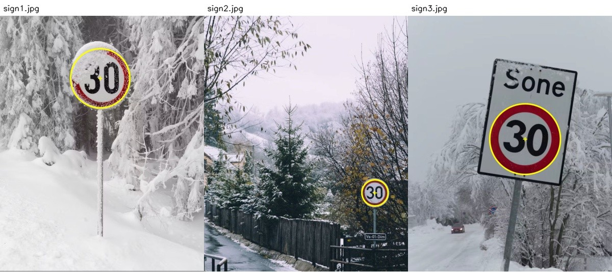

Bonus Homework 01: Circular Speed Signs
Due: Monday, November 9, 2026
Total: 1.5 bonus points
Submission: Gradescope Programming Assignment
Work: Individual
No late submissions are accepted for this bonus assignment. You have five Gradescope submissions.
Objective
Use color segmentation from Lecture 09 and circle detection from Lecture 08 to locate a European circular speed-limit sign. Implement a red-pixel mask, use that mask in your detector, and return the center and radius of one circle. You do not need to read the speed-limit number.
Use the course cv Conda environment. You may adapt the lecture examples. Do not use generative AI to solve this homework.
Starter files
Download hwb01_Starter.zip and extract it into one folder. It contains:
| File | Purpose |
|---|---|
| hwb01.py | Complete red_mask and detect_sign |
| evaluate.py | Check public scores and save masks and overlays |
| hwb01_support.py | Provided scoring and interface checks; no detection solution |
| public_references.json | Reference circles for public evaluation |
| sign1.jpg, sign2.jpg, sign3.jpg | Images for development and tuning |


Keep the images and provided evaluation files unchanged. Submit only hwb01.py.
Implement the detector
red_mask(image) -> mask
detect_sign(image) -> np.array([center_x, center_y, radius]) or NoneComplete both functions in hwb01.py. red_mask receives a BGR uint8 image and returns a uint8 array of shape (H, W), containing only 0 and 255. Implement the segmentation yourself; no red-mask helper is provided.
detect_sign receives a BGR uint8 image of shape (1000, 750, 3). Return a finite numeric NumPy array of shape (3,) in original image coordinates. The radius must be positive and the circle must fit inside the image. Return None if no circle is detected. Do not modify the input to either function.
Your detector must call your red_mask function and use its result in the detection pipeline. It must use cv2.HoughCircles to obtain the candidate circles. Additional helper functions may be defined in the same file.
Images and target boundary
The three supplied images, sign1.jpg through sign3.jpg, are for tuning. Three similar private photographs are used for grading. All six are 750 pixels wide by 1000 pixels high. Each contains one target circular speed-limit sign, entirely inside the photograph.
Similar means comparable sign sizes, viewpoints, backgrounds, and lighting challenges to the supplied examples. The target can be snowy or backlit, have a white or yellow interior, or appear on a rectangular backing panel. Other noncircular signs can appear in the same image. Aim for the outer boundary of the red circular band, excluding snow, mounting rims, and backing panels.
Snow, shadows, and perspective can make the sign boundary ambiguous. Your detected circle does not need to match it perfectly. Grading allows reasonable errors in both the center and radius, with partial credit for larger errors. Detecting an inner border can earn center credit and partial radius credit; it is not automatically treated as the outer boundary.
Hints
- Visualize intermediate results to understand where your detector succeeds or fails.
- Explore the relevant OpenCV functions and experiment with their parameters.
- Test your approach on all three public images, including the challenging lighting and snow.
Within the implementation rules below, you are free to choose your preprocessing, parameter-selection strategy, and how to select among candidate circles. No particular pipeline is required.
Implementation rules
Use OpenCV and NumPy for detection. Use one general algorithm and parameter policy for every image. Do not identify images by filename, pixel fingerprint, stored reference coordinates, or a lookup table. Do not load image files or annotations inside either submitted function. Do not use pretrained detectors, OCR, or replace Hough circle detection with contour fitting. No training is required.
The required mask and Hough calls must contribute to the returned detection; unused or dummy calls do not satisfy the requirement. The grader checks calls and interfaces, and code may be reviewed. It does not compare your red mask pixel by pixel with an instructor mask.
Tests and grading
| Test group | Images | Bonus points |
|---|---|---|
| Public localization | 3 supplied images | 0.30 |
| Private localization | 3 similar images | 1.20 |
| Total | 6 images | 1.50 |
Images share their group points equally, up to numerical rounding. Half of each image’s points measure center accuracy and half measure radius accuracy. Center error is Euclidean distance from the reference center; radius error is the absolute difference from the reference outer radius. Small errors are expected.
The same bands apply separately to center and radius. Let r be the reference outer radius, measured in pixels. Use the first matching row:
| Component credit | Maximum error |
|---|---|
| 100% | max(6 pixels, 0.10 r) |
| 75% | max(9 pixels, 0.15 r) |
| 50% | max(15 pixels, 0.25 r) |
| 25% | max(24 pixels, 0.40 r) |
| 0% | Above the final band |
For example, if r = 50 pixels, center error of 5 pixels receives full center credit. Radius error of 12 pixels receives 50% radius credit. Together, those earn 75% of that image’s points.
Public and private cases also check output shape/type, finite coordinates, input preservation, and use of the required functions. A failed interface or required-method check gives zero on that image. Returning None gives zero on an image containing a sign. Mask checks have no separate point allocation.
Public test scores and center/radius credit bands are visible immediately. Private test results are hidden until after the due date, then show center/radius credit bands. Private photographs, reference coordinates, numeric errors, and detection overlays are not revealed. A private execution or interface failure is reported without private input details.
Run and inspect
conda activate cv
python evaluate.pyThe local evaluator saves public masks and overlays in results/. Public reference circles and the scoring code are included so you can reproduce localization scores. They are evaluation aids, not inputs to your detector. Write your implementation in hwb01.py.

First make your algorithm work well on all three public images. Use your five Gradescope submissions thoughtfully to verify your public results. Private feedback is not available for tuning before the deadline. Similar images make generalization plausible, but do not guarantee identical results.
Submission
Submit only your completed hwb01.py to Gradescope. No report, generated images, notebook, helper module, or reference JSON is required. Keep additional helpers in that file. Do not run experiments, create windows, or read files at import time. The time limit is 120 seconds per image. The grader enforces five attempts using submission history. Submissions 6 and later receive zero for that submission; earlier submissions remain unchanged. Platform autograder failures do not count, but student-code errors and timeouts do. The usual late-submission policy does not apply: no submissions after the stated deadline.